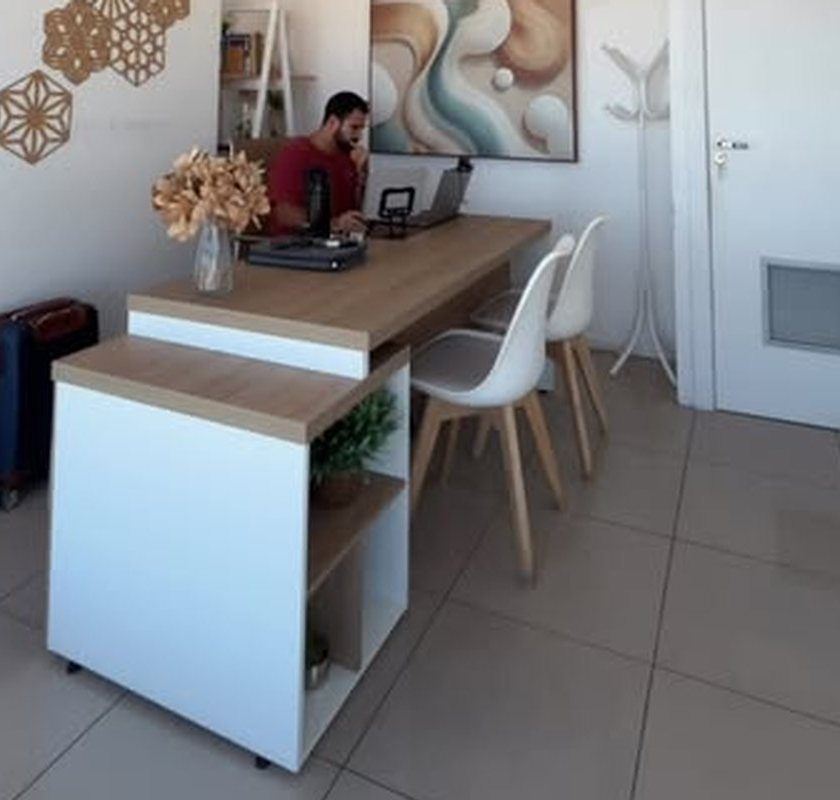

Nutricionista Clínico & Esportivo
Sem dieta sofrida. Com resultado de verdade.
Nutrição simples, direta e verdadeira: não é só caloria, é comida que traz nutriente e saúde. Um plano que funciona na sua vida de verdade, com acompanhamento até o fim.
- On-line para todo o Brasil
- Presencial com hora marcada
Victor LatifClínico & Esportivo
Sem efeito sanfona.
Antes de tudo
Topa ser meu paciente?
Sem promessa milagrosa e sem regra absurda. O combinado é outro.
O que eu não sou
- O nutricionista perfeito
- Quem faz terrorismo alimentar
- Quem passa as dietas mais absurdas do mundo
- Mais um "começa na segunda"
O que eu garanto
- Ficar com você em todos os momentos do protocolo, sem desistências
- Um plano que funciona na sua rotina, não no papel
- Comida de verdade: equilíbrio, prazer e contexto estratégico
- Espaço para o doce, sem culpa
Não é falta de força, não é falta de querer. É falta de um plano que funcione na sua vida de verdade.
Victor Latif
Por onde começar
Qual é o seu objetivo?
Toque no que mais pesa hoje: o agendamento já abre com ele escolhido.
Sem pressa, sem sanfona
2 kgpor mês NÃO é fracasso
É a internet que vende resultado instantâneo e compara o seu processo com o print de alguém. Constância ganha de pressa.
Ilustração do raciocínio das legendas do Victor (2 kg × 12 meses). Cada corpo tem o seu ritmo: a meta real sai da consulta.
Especialidades
Do consultório à quadra
A consulta
Quatro etapas, um plano seu
Anamnese
Sua rotina, sono, treino, exames, histórico e o que você gosta de comer.
Avaliação
Antropometria: peso, circunferências e composição corporal.
Plano alimentar
Montado para a sua vida real, com trocas e espaço para o prazer.
Acompanhamento
Retornos para medir, ajustar e seguir junto. Sem desistências.
Vocês 🔵
Quem já é paciente
Pacientes que marcam o Victor no Instagram. Nada de depoimento inventado: só o que elas mesmas postaram.
Mesmo look, outra disciplina.Ver o antes e depois que ela postou →
Os retornos e resultados dos pacientes ficam reunidos no Instagram. Fotos e falas entram aqui só com autorização de cada um.
Abrir o InstagramFerramenta rápida
Quanta água você precisa?
Retenção de líquidos começa a melhorar com escolhas simples, e a primeira é a água na medida certa. Faça a conta de referência.
Digite o peso para ver a estimativa diária (35 ml por kg).
Estimativa, não substitui consulta. Treino, calor, gestação e algumas condições de saúde mudam essa conta. A meta certa para você sai da consulta.
No Instagram
Conteúdo sem terrorismo
Agendamento
Marque sua consulta
Uns dois minutos, sem cadastro. Você escolhe on-line ou presencial, o objetivo e o horário. A confirmação vem pelo WhatsApp.
Com quem?
Sua consulta
Três toques: como, para quê e qual consulta.
Dia e horário
Escolha o dia na fita e depois o horário.
Seus dados
Para o Victor confirmar o horário e já chegar preparado na sua consulta.
Consulta reservada
com
Seu código
Horário guardado. Agora mande o resumo no WhatsApp do Victor para confirmar. Com o código você consulta ou cancela até 12 horas antes.
Já marcou?
Consultar ou cancelar
Imprevisto acontece. Cancele por aqui e o horário volta para a agenda. Vale até 12 horas antes; depois disso, chame o Victor no WhatsApp.
Contato
On-line para o Brasil, presencial com hora marcada
